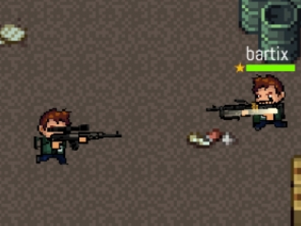
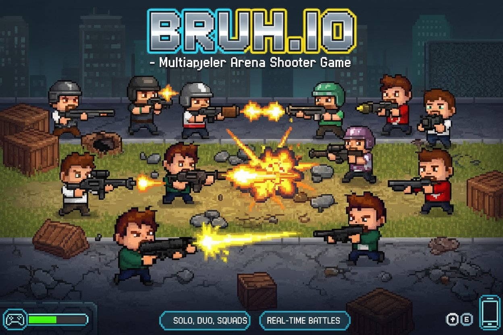
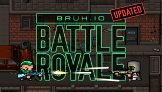

Introduction
Bruh.io is a fast‑paced, browser‑based multiplayer battle royale where you drop onto a shrinking arena, scavenge weapons, and fight to be the last player standing. Unlike larger titles, Bruh.io runs instantly in any modern browser with no downloads, offering quick 2‑3 minute matches that are perfect for a casual session. The game’s minimalist art style, responsive controls, and instant respawn make it accessible to newcomers while its strategic gas zones, loot distribution, and weapon recoil keep seasoned players on their toes. The community‑driven wiki and simple UI let you learn mechanics quickly, and the ever‑shrinking safe zone forces constant movement and tense confrontations, delivering an addictive blend of survival and skill. The map features distinct landmarks—abandoned factories, open fields, and small towns—each with varying loot quality. Fast respawns let you jump back in instantly, making every match a fresh chance to dominate.
Getting Started

Start by opening https://bruh.io in your browser. No registration is required—click 'Play' and you’ll be dropped into a random match with up to dozens of other players. The default controls are WASD to move, mouse to aim, left‑click to shoot, and Space to jump. Press M to open the full‑screen map where the white safe zone and red danger border are clearly marked. Immediately after spawning, scan your surroundings for a weapon; common picks are the Pistol (low damage, high fire rate) and the SMG (moderate damage, fast reload). Collect items by walking over them—bandages, pain killers, and medkits restore HP, while Kevlar Vests add up to 50 extra Armor Points (AP). Your HP bar is the light‑green bar at the center of the HUD; the orange AP bar sits directly above it. Stay inside the safe zone; if you enter the red gas, you’ll lose HP every half‑second. The minimap in the corner constantly updates the zone’s position, so keep an eye on it. When you find a better weapon—like the Assault Rifle or Shotgun—switch to it by pressing 1‑4 or clicking the corresponding slot. If you die, you can instantly rejoin a new match with a fresh spawn.
Basic Tips
1. Always watch the safe zone and plan your route early. When the white square shrinks, move toward its center before the gas catches you—waiting until the last second often results in unavoidable damage. 2. Prioritize early‑game loot: grab a Pistol or SMG immediately after spawning, then search for a Medkit and at least one Kevlar Vest. Carrying a vest can absorb up to 50 extra points of damage, giving you a significant edge in early fights. 3. Use the map (press M) to locate high‑tier loot areas such as the abandoned factory or the central town. These zones spawn rarer weapons like the Assault Rifle or Shotgun more frequently than open fields. 4. Manage your health intelligently. If you’re low on HP, pop a Painkiller for rapid recovery, then switch to Bandages for sustained healing. Never let your HP drop below 30 without a heal ready, because a single surprise encounter can finish you off. 5. Stay mobile and avoid camping in the same spot. The gas forces everyone inward, so a stationary position will eventually be surrounded. Jump between structures, use jumps (Space) to cross low walls, and keep your crosshair alert for movement.
Advanced Strategies

1. Zone‑control positioning: Instead of simply staying inside the safe zone, aim to stand on the edge of the white square where the gas is about to close. This gives you a clear view of opponents forced into the same narrow corridor, letting you pick them off as they run. 2. Loot prioritization by phase: In the early phase, focus on getting a Kevlar Vest and a fast‑firing weapon like the SMG. As the zones shrink, shift to high‑damage guns (Assault Rifle, Shotgun) and carry at least two medkits, because later circles have fewer resources and more aggressive confrontations. 3. Sound and sight cues: Listen for footsteps and gunfire; Bruh.io’s minimalistic map means audio cues are critical. If you hear a reload nearby, you can push immediately for an easy kill. Likewise, watch the minimap for white dots that indicate other players’ positions relative to you. 4. Dynamic inventory management: Keep your hotbar balanced—always have a primary weapon, a secondary (e.g., Pistol for backup), and a heal slot. Drop low‑value items such as excess bandages once you have a medkit, because inventory space is limited and you don’t want to miss a rare weapon drop.
Pro Tips

1. Master the recoil pattern of the Assault Rifle: fire in short bursts of three to four bullets, then pause to let the crosshair reset. This reduces spread and lands headshots at mid‑range. 2. Exploit gas timing: when the safe zone shrinks, the gas moves predictably. If you’re outside, wait for the moment it begins to contract, sprint to the new edge, and set up a defensive spot before opponents arrive. 3. Use the environment strategically—crouch behind low walls to shrink your hitbox, and jump to vault over obstacles. Combining crouch‑jump techniques makes you a moving target that’s hard to hit while you line up shots. 4. Monitor the remaining player count on the top‑right scoreboard. Knowing only three opponents are left lets you adopt a last‑stand playstyle, holding high ground with a Shotgun and picking off anyone who advances.
Conclusion
Bruh.io combines fast matches, simple controls, and strategic depth into a browser‑based battle royale that anyone can enjoy. With a shrinking safe zone, diverse weapons, and health‑management mechanics, each game offers fresh challenges. Jump in now, apply these tips, and you’ll quickly climb the leaderboards. See you on the battlefield!